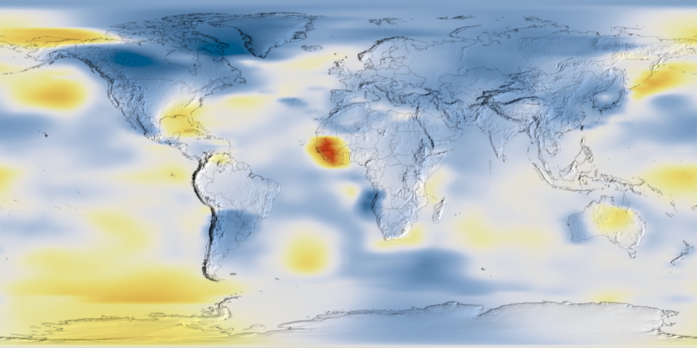

Global NASA images
The 1884 and 2022 frames come from NASA Scientific Visualization Studio and the Earth Information Center. They show global temperature anomaly, not Dhaka air temperature.
SIGNAL FOUND · DHAKA, BANGLADESH
Look at real NASA images. Hear them become sound. Follow Echo through six years and choose how the story ends.
A NOTE FROM A POSSIBLE FUTURE
“Hello? Our message broke apart. Please follow the sounds and help Echo put it back together.”
The voice and future story are made up. The Earth images you will explore are real.
LOOK + LISTEN
Pick a year. Press Scan. The glowing line reads a real NASA frame from left to right and makes a new sound as it moves.

Low, airy areas and sharper, grainy areas play as the line crosses the picture. Sound follows the image; it is not a recording from space.
This live sound reads image color and position. It does not measure degrees Celsius. You can follow the same story with sound off.
Images: NASA Scientific Visualization Studio · Earth Information Center
LEARN THE SOUND RULES
These three controls are practice examples. Move them and listen to the texture. They are not live Earth measurements.
A quiet scene. Move a control to hear what changes.
LISTEN OR READ
Choose the sound you hear or read.
THE SIGNAL LEADS HERE
Four years show real NASA observations. The last two show an imagined future. Each year gives you one part of the message.
REAL NASA IMAGE
Look at the image. Scan it. Then choose where to listen again.
A made-up street story helps us think about people behind the data.
Observed images are eight-day daytime land surface temperature views around Dhaka, requested for April 15. They are snapshots, not a measured trend or street-level air temperature. Future rounds use the 2024 image as a dated reference; future scenes and results are imagined.
THE MESSAGE IS WHOLE
Replay the real images as a short sound record. Each sound is made from the image as it scans. It is original sound inspired by NASA's sonification method, not an official NASA recording.
Ready to replay. Sound descriptions remain available when sound is off.
A NOTE FROM ECHO
Earth can be seen and heard. Your choices shaped a story. Keep asking what an image shows—and what it cannot show.
Real NASA images: 1884, 2022, 2000, 2010, 2020, 2024. Future scenes and story choices are imagined.
The 1884 and 2022 frames come from NASA Scientific Visualization Studio and the Earth Information Center. They show global temperature anomaly, not Dhaka air temperature.
The 2000, 2010, 2020, and 2024 images are NASA Terra MODIS eight-day daytime land surface temperature views requested for April 15. They show land and roof heat, not the temperature a person feels. A few snapshots alone do not show a climate trend.
The browser reads color, brightness, and position in each image while a line moves left to right. Those features shape layers of filtered noise and short pulses in real time. This original sound follows the spatial sweep and layered approach in NASA's sonification examples. It is not NASA audio or a reading in degrees Celsius.
Echo, the message, people, street scenes, 2035 and 2050 paths, and the effects of player choices are imagined. The 2024 NASA image remains on screen in future rounds as a dated reference, not a future map. See the challenge brief.
Developed and Designed by Team BYTEAERO: KIYAS, ZUBAYER, ROHIT, PROMI, RAHUL, SHAFAYET, FROM AIUB, DHAKA
Home Video font by GGBotNet (CC0). Independent NASA Space Apps Challenge project; not an official NASA product.